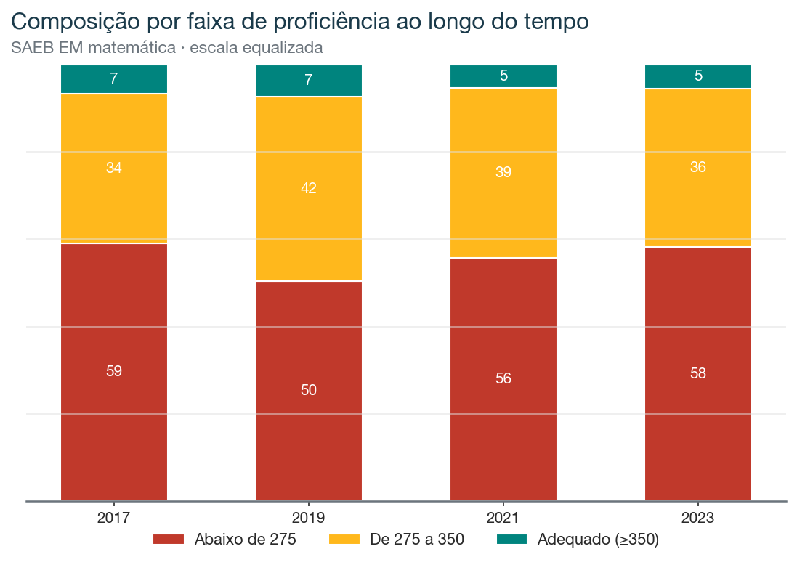
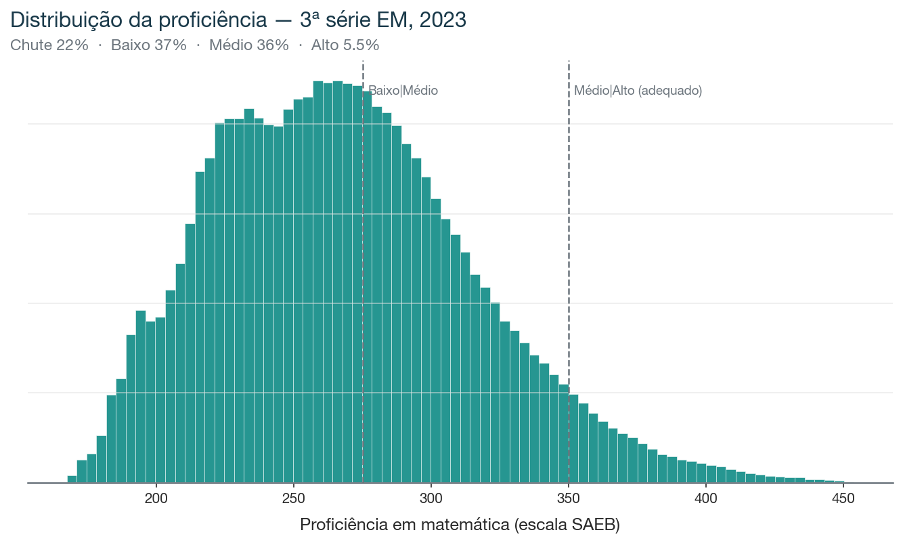

Capítulo 1
Uma década estagnada, com um mergulho na pandemia
No ENEM, a nota subiu 60 pontos em dez anos, sem que PISA ou SAEB confirmassem. Aqui medimos o SAEB direto, na escala equalizada que torna a comparação legítima.
A proficiência média foi 266 (2017) → 273 (2019) → 267 (2021) → 268 (2023). O aprendizado adequado subiu de 6,6% para 7,4% até 2019, despencou para 5,2% em 2021, o fundo da pandemia, e mal se recuperou em 2023 (5,5%), abaixo de onde estava em 2017.

Na régua que de fato equaliza, a década é de estagnação. O movimento que aparecia no ENEM não existe aqui.
Capítulo 2
O que cada grupo realmente sabe
A foto detalhada usa a edição mais recente (2023). A nota separa os concluintes em quatro grupos: Chute, que acerta no nível do acaso (taxa abaixo de 0,20, o esperado chutando itens de 5 alternativas); Baixo; Médio; e Alto, proficiência ≥ 350, o limiar do aprendizado adequado.

Escoreando as respostas por habilidade, a leitura é dura e tem a mesma assinatura do ENEM:

- Leitura de Dados é a única habilidade com cobertura razoável (56% de acerto). Ler um gráfico ou uma tabela é o que mais gente consegue fazer.
- Todas as outras oito ficam abaixo de 40%: Porcentagem 38%, Equações 34%, Números reais 33%, Geometria 31%, Funções 30%, Proporcionalidade 26%, Medida 24%, Estatística e probabilidade 21%.
- Fora do estrato Alto, quase nada passa de 50%. No Médio, só Leitura de Dados (75%) e Porcentagem (55%) cruzam a metade.
- Mesmo o topo tem buracos: o Alto acerta Leitura de Dados em 92%, mas Estatística em 45% e Medida em 58%.
A forma desse perfil é estável nas quatro edições (Leitura de Dados sempre na frente, a abstração sempre atrás). Os níveis absolutos por habilidade não são comparáveis entre anos, porque a composição de itens de cada prova muda. Por isso a dimensão temporal fica na proficiência equalizada, e o perfil de habilidade é lido dentro de cada ano.
Capítulo 3
O que diferencia um degrau do outro
Comparar estratos consecutivos mostra qual habilidade separa um grupo do seguinte.

- Chute → Baixo: o que mais avança é Leitura de Dados (+22 pp). Sair do acaso é, antes de tudo, conseguir ler informação apresentada em gráfico ou tabela.
- Baixo → Médio: o motor é Porcentagem (+25 pp), a aritmética aplicada.
- Médio → Alto: o salto é largo e geral (+28 pp em média por habilidade). Chegar ao adequado não depende de uma habilidade, depende de fluência em quase todas ao mesmo tempo.
A matemática que o sistema entrega primeiro é a de ler dados. A abstração quase não chega.
Capítulo 4
As escolas e a sala de aula
O SAEB é censitário e já vem com escola e turma identificadas, então o mapa de escolas é nativo. No ENEM, isso só foi possível em 2024.
Traduzindo para a sala de aula real, usando as turmas do próprio dado:

Visto escola por escola, o sistema é majoritariamente de baixo desempenho.
Capítulo 5
O gradiente socioeconômico, e a síntese
O gradiente é claro, o aluno mais rico tem quase quatro vezes mais chance de atingir o adequado, e modesto em termos absolutos: mesmo no topo socioeconômico, 9 em cada 10 concluintes não atingem o aprendizado adequado em matemática. O déficit é geral, não um problema só dos mais pobres.
No censo, a hipótese que ficou aberta no ENEM se confirma: a maioria dos concluintes do Ensino Médio termina sem domínio sólido de matemática, um em cada cinco no nível do acaso, e só 5,5% no aprendizado adequado. A única habilidade com alguma cobertura é leitura de dados. A abstração fica para trás em toda a distribuição. E, na régua equalizada, a década é de estagnação, com a pandemia desfazendo o pouco que se havia ganhado.